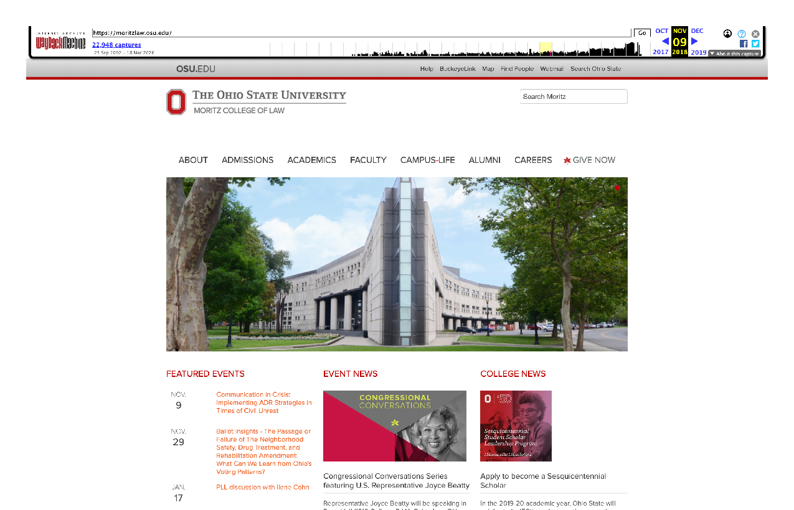
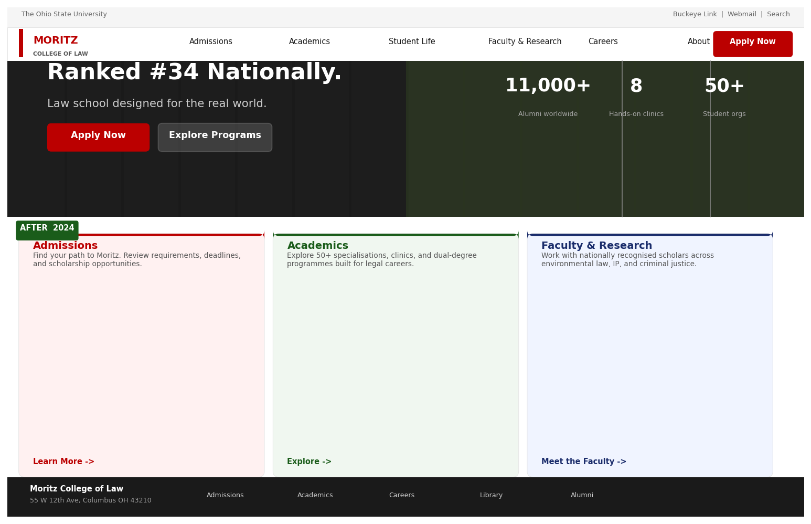
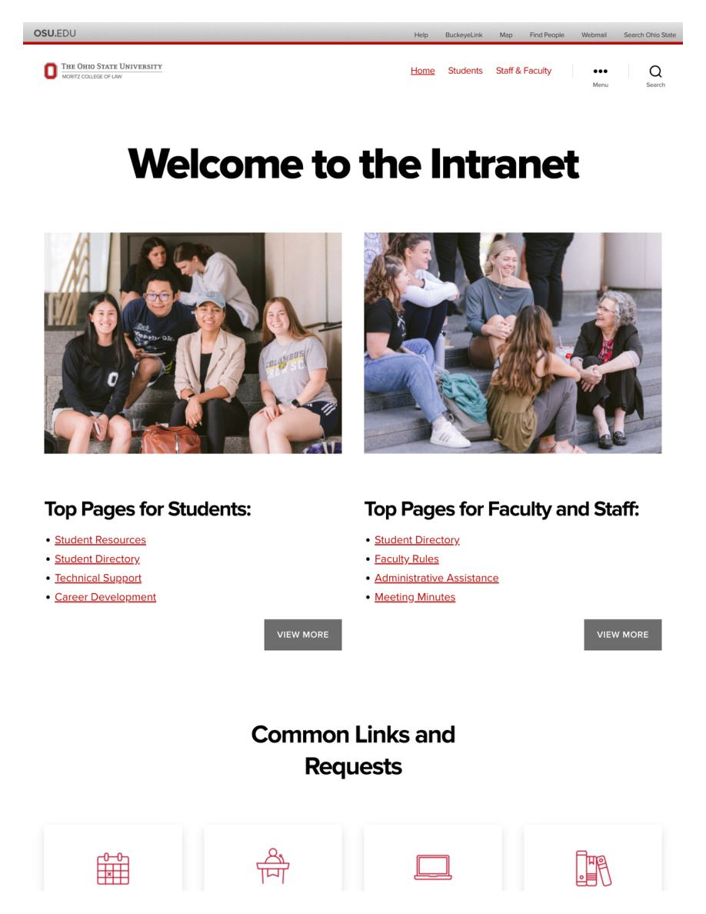
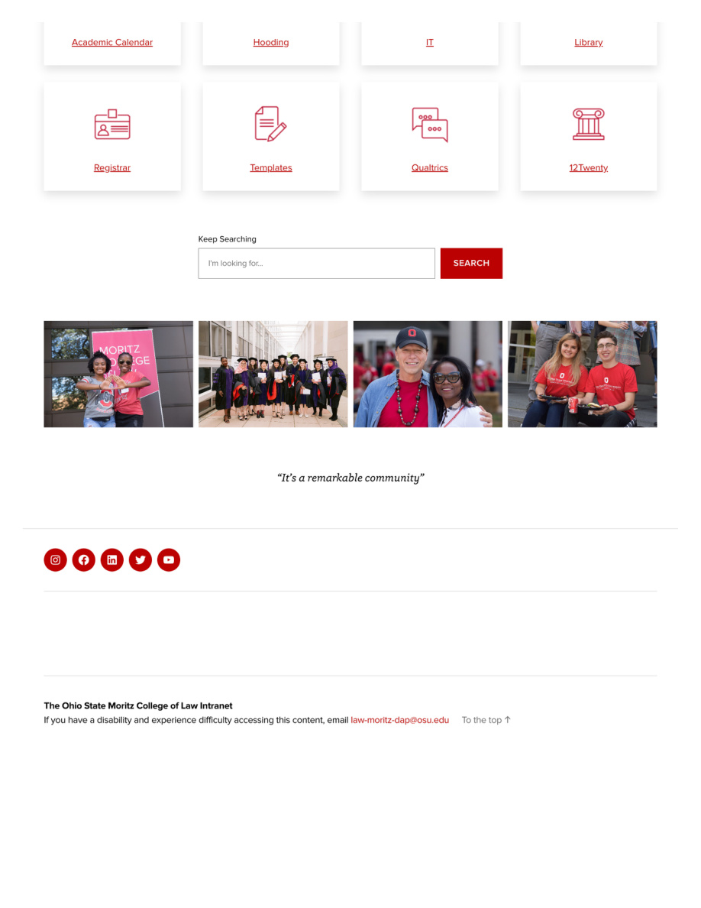
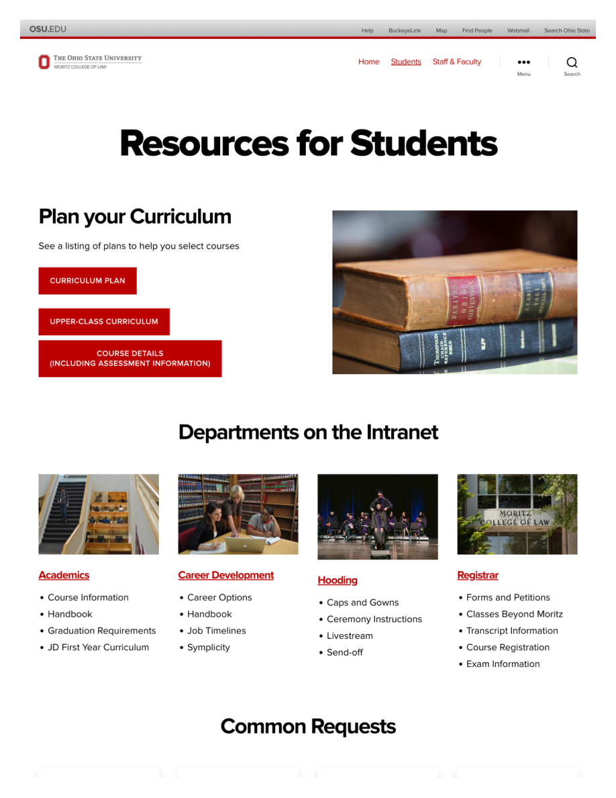
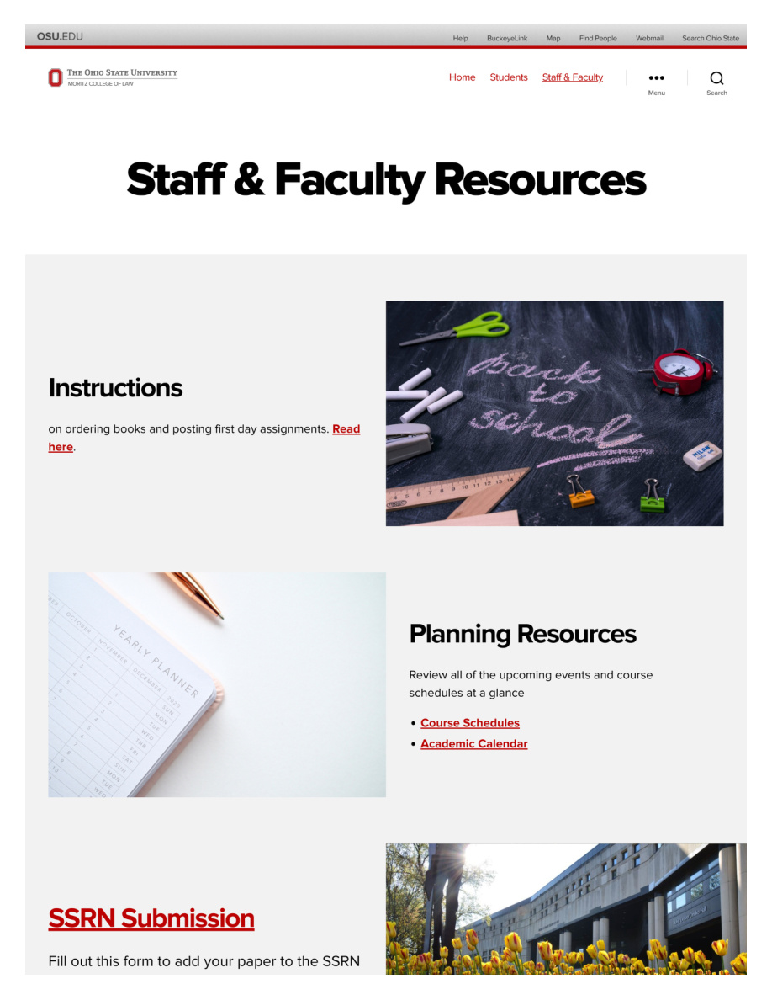
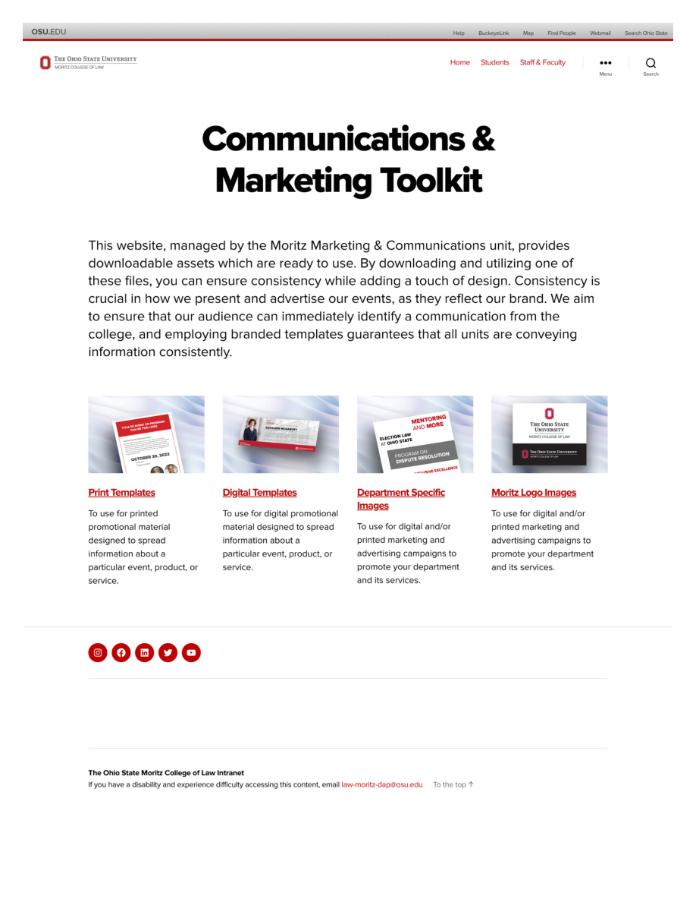

Ohio State Website Migration
The Ohio State University, Moritz College of Law
An outdated, hard-coded web platform was creating friction for users and holding back conversion on both the public college website and the internal staff and student intranet. Content updates were slow, inconsistent, and dependent on technical staff, and the transition had to happen with no downtime and no content loss.
Ranked #34 nationally, Moritz College of Law needed platforms that matched its standing: a public website that competed for prospective students, and an intranet that actually served the people who used it every day.
Platform Migration: Move both the public site and the legacy intranet to a flexible, maintainable CMS.
Information Architecture: Redesign the intranet around two distinct user groups (Students vs. Staff and Faculty) and rebuild the public site around conversion and discoverability.
Brand Governance: Build a self-serve communications toolkit so individual departments could produce on-brand materials without relying on the central design team.
1. Public Website Redesign
The redesign replaced a dense three-column text layout and a static building photo with an editorial, people-first design. The new site leads with a full-width faculty story and a clear call to action, and a magazine-style card grid surfaces news and events instead of burying them. Navigation was simplified, and the whole structure moved into the CMS, giving the team editorial control they had not had before.


2. Audience-Segmented Intranet
The intranet homepage was built around two distinct user paths, so visitors could choose their journey immediately.
For Students: A scannable dashboard where curriculum planning, directories, and common request forms became visual icon cards, greatly reducing clicks for the most frequent actions.
For Staff & Faculty: A dedicated administrative hub covering HR, IT, grant applications, and committee access, with a persistent, searchable directory.




3. Self-Serve Design Toolkit
To remove the communication bottleneck, I built a central branded asset hub. Every department could download print and digital templates, curated image libraries, and logo files, so non-designers could produce consistent, on-brand materials on their own and the central team’s backlog disappeared.

6-Year Tenure
- Full project lifecycle: Managed end-to-end delivery, aligning cross-functional requirements, coordinating stakeholders, overseeing the CMS build, and ensuring no content was lost during migration.
- UX & IA strategy: Defined the audience segmentation, navigation hierarchy, and content taxonomy for both the public site and the intranet.
- Accessibility compliance: Built and maintained all CMS page templates to strict accessibility standards during the project and after launch.
- Operational management: Coordinated content updates, production schedules, and cross-departmental requests over six years, and managed access permissions and distribution lists.
Delivered on time with zero downtime and no content loss. In the first quarter after launch, the new public site showed measurable UX improvements and conversion gains, and prospective student enquiries increased. The CMS migration gave the college full editorial independence, and the self-serve toolkit nearly eliminated ad hoc template requests, keeping the brand consistent across all college channels.